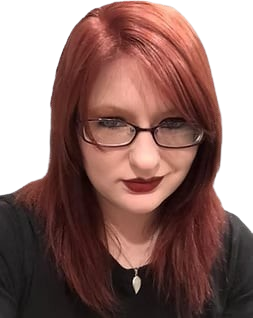

About the Editor
My name is Kyla Lay, but my authors know me as Ky. I started this business as a freelance editor working for Indie-Authors who needed help at an affordable price. Since starting the business, I've expanded to doing professional development and other genres on top of my usual Indie-Author novels. I also edit educational dissertations with a focus on mainly Education Degrees but I am open to any and all degree paths.
I graduated college with a bachelor's degree in English, and I've been professionally editing with my current authors for several years. I also teach at a small high school in a neighboring city and work in a small town in Texas. Between my college and professional experience, I am 100% qualified to help any and every author that I take on. Everything I do is remote but involves heavy communication with each author I work with. Because of that heavy communication, there will never be any question as to what, how, or why I do what I do.
I inevitably befriend the authors I take on because I'm fair, easy to get along with, and am personable with everyone. I am always looking to take on more authors and projects in order to turn this small business into a full time career. If you're interested, please feel free to contact me at the form provided. I can't wait to meet you and work on your projects together!